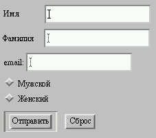
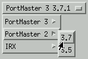

Содержание
Форма HTML - это раздел документа, в котором содержатся обычная информация, разметка и специальные элементы, называемые управляющими элементам (флажки, кнопки с зависимой фиксацией, меню и т.д.), а также метки этих управляющих элементов. Обычно пользователи "заполняют" форму, модифицируя управляющие элементы (вводя текст, выбирая пункты меню и т.д.) перед тем, как предоставить форму агентц пользователя для обработки (например, на Web-серввер, на почтовый сервер и т.д.)
Вот простая форма, включающая метки, кнопки с зависимой фиксацией и кнопки (очистка формы или отправка):
<FORM action="http://somesite.com/prog/adduser" method="post">
<P>
<LABEL for="firstname">Имя: </LABEL>
<INPUT type="text" id="firstname"><BR>
<LABEL for="lastname">Фамилия: </LABEL>
<INPUT type="text" id="lastname"><BR>
<LABEL for="email">Адрес электронной почты: </LABEL>
<INPUT type="text" id="email"><BR>
<INPUT type="radio" name="sex" value="Male"> Мужской<BR>
<INPUT type="radio" name="sex" value="Female"> Женский<BR>
<INPUT type="submit" value="Отправить"> <INPUT type="reset">
</P>
</FORM>
Примечание. В данной спецификации имеется более подробная информация о формах в подразделах о проблемах отображения форм.
Пользователи взаимодействуют с формами с помощью именованных управляющих элементов.
"Имя элемента" задается атрибутом name. Областью действия атрибута name для управляющего элемента в элементе FORM является элемент FORM.
Каждый управляющий элемент имеет начальное и текущее значение, оба они являются символьными строками. Информацию о начальных значениях и возможных ограничениях на значения см. в определении управляющего элемента. В общем случае "исходное значение" управляющего элемента может задаваться с помощью атрибута value. Однако исходное значение элемента TEXTAREA задается его содержимым, а исходное значение элемента OBJECT в форме определяется реализацией объекта (т.е лежит вне области, рассматриваемой в данной спецификации).
"Текущее значение" управляющего элемента сначала устанавливается равным начальному значению. Затем текущее значение может изменяться пользователем или скриптами.
Начальное значение управляющего элемента не изменяется. Таким образом при сбросе формы каждое текущее значение устанавливается равным начальному значению. Если управляющий элемент не имеет начального значения, результат сброса формы непредсказуем.
Когда форма предоставляется для обработки, с формой передаются пары управляющий элемент-текущее значение. Передаваемые пары имя/значение называются успешными управляющими элементами.
В HTML определены следующие типы управляющих элементов:
Авторы должны определять язык скрипта для кнопок в объявлении скрипта по умолчанию (в элементе META).
Авторы создают кнопки с помощью элемента BUTTON или INPUT. Подробнее об определении различных типов кнопок см. в определении этих элементов.
При отправке формы успешными могут стать только включенные переключатели. Несколько флажков в форме могут иметь одно и то же имя управляющего элемента. Таким образом, например, флажки позволяют пользователям выбрать несколько значений для одного и того же свойства. Для создания флажков используется элемент INPUT.
Элементы, используемые для создания управляющих элементов, обычно располагаются в элементе FORM, но могут находиться и за пределами объявления FORM, если они используются для построения интерфейса пользователя. Это обсуждается в разделе о внутренних событиях. Обратите внимание, что управляющие элементы за пределами формы не могут быть успешными.
<!ELEMENT FORM - - (%block;|SCRIPT)+ -(FORM) -- интерактивная форма --> <!ATTLIST FORM %attrs; -- %coreattrs, %i18n, %events -- action %URI; #REQUIRED -- обработчик формы на сервере -- method (GET|POST) GET -- метод HTTP, используемый для отправки формы-- enctype %ContentType; "application/x-www-form-urlencoded" onsubmit %Script; #IMPLIED -- форма отправлена -- onreset %Script; #IMPLIED -- форма сброшена -- accept-charset %Charsets; #IMPLIED -- список поддерживаемых наборов символов -- >
Начальный тег: обязателен, Конечный тег: обязателен
Определения атрибутов
По умолчанию значением этого атрибута является зарезервированная строка "UNKNOWN". Агенты пользователей могут интерпретировать это значение как кодировку символов, используемую для передачи документа, содержащего этот элемент FORM.
Атрибуты, определяемые в другом месте
Элемент FORM служит контейнеров для управляющих элементов. Он определяет:
Форма помимо управляющих элементов может содержать текст и разметку (абзацы, списки и т.д.).
В следующем примере показана форма, которая должна обрабатываться программой "adduser". Эта форма будет отправляться с использованием метода HTTP "post".
<FORM action="http://somesite.com/prog/adduser" method="post"> ...содержимое формы... </FORM>
В следующем примере показана отправка формы на адрес электронной почты:
<FORM action="mailto:Kligor.T@gee.whiz.com" method="post"> ...содержимое формы... </FORM>
Информацию о том, как агенты пользователя должны подготавливать данные формы для серверов и как они должны обрабатывать ответы от сервера Вы можете найти в разделе об отправке формы.
Примечание. Дальнейшее обсуждение поведения серверов, принимающих данные формы, лежит вне области, рассматриваемой в данной спецификации.
<!ENTITY % InputType
"(TEXT | PASSWORD | CHECKBOX |
RADIO | SUBMIT | RESET |
FILE | HIDDEN | IMAGE | BUTTON)"
>
<!-- атрибут является обязательным для всех типов, кроме submit и reset -->
<!ELEMENT INPUT - O EMPTY -- управляющий элемент формы -->
<!ATTLIST INPUT
%attrs; -- %coreattrs, %i18n, %events --
type %InputType; TEXT -- тип вводимой информации --
name CDATA #IMPLIED -- передать как часть формы --
value CDATA #IMPLIED -- обязателен для кнопок с зависимой фиксацией и флажков --
checked (установлен) #IMPLIED -- для кнопок с зависимой фиксацией и флажков --
disabled (отключен) #IMPLIED -- в данном контексте недоступен --
readonly (только чтение)#IMPLIED -- для текста и паролей --
size CDATA #IMPLIED -- зависит от типа поля --
maxlength NUMBER #IMPLIED -- максимальное число символов в текстовом поле --
src %URI; #IMPLIED -- для полей с изображениями --
alt CDATA #IMPLIED -- краткое описание --
usemap %URI; #IMPLIED -- использовать клиентскую навигационную карту --
tabindex NUMBER #IMPLIED -- позиция в последовательности перехода --
accesskey %Character; #IMPLIED -- клавиша доступа --
onfocus %Script; #IMPLIED -- фокус на этом элементе --
onblur %Script; #IMPLIED -- фокус перемещен на другой элемент --
onselect %Script; #IMPLIED -- выделен некоторые текст --
onchange %Script; #IMPLIED -- значение элемента изменено --
accept %ContentTypes; #IMPLIED -- список типов MIME для загрузки файлов --
>
Начальный тег: обязателен, Конечный тег: запрещен
Определения атрибутов
Атрибуты, определяемые в другом месте
Тип управляющего элемента, определяемый элементом INPUT, зависит от значения атрибута type:
Примечание. Разработчикам приложений следует обратить внимание на то, что этот механизм обеспечивает только слабую защиту. Хотя пароль маскируется агентом пользователя от случайных наблюдателей, он передается на сервер в виде открытого текста, и его может прочесть любой пользователь, имеющий доступ к сети на низком уровне.
Если для щелчка на изображении используется указующее устройство, на сервер передаются форма и координаты щелчка. Значение x измеряется в пикселах от левой границы изображения, а значение y - в пикселах от верхней границы изображения. В передаваемые данные включаются последовательности имя.x=значение-x и name.y=значение-y, где "имя" - значение атрибута name, а значение-x и значение-y - значения координат x и y соответственно.
Если сервер предпринимает различные действия в зависимости от места щелчка, пользователи неграфических браузеров не смогут воспользоваться этим свойством. По этой причине авторам следует предусматривать альтернативные подходы:
В следующем фрагменте кода HTML определяется простая форма, позволяющая пользователям вводить имя, фамилию, адрес электронной почты и пол. В случае активизации кнопки отправки форма передается программе, указанной в атрибуте action.
<FORM action="http://somesite.com/prog/adduser" method="post">
<P>
Имя: <INPUT type="text" name="firstname"><BR>
Фамилия: <INPUT type="text" name="lastname"><BR>
email: <INPUT type="text" name="email"><BR>
<INPUT type="radio" name="sex" value="Male"> Мужской<BR>
<INPUT type="radio" name="sex" value="Female"> Женский<BR>
<INPUT type="submit" value="Отправить"> <INPUT type="reset">
</P>
</FORM>
Эта форма может представляться следующим образом:

В разделе об элементе LABEL мы обсудим разметку меток типа "First name".
В следующем примере в случае события "onclick" включается функция JavaScript с именем verify:
<HEAD>
<META http-equiv="Content-Script-Type" content="text/javascript">
</HEAD>
<BODY>
<FORM action="..." method="post">
<P>
<INPUT type="button" value="Нажми тут" onclick="verify()">
</FORM>
</BODY>
Подробнее о скриптах и событиях Вы можете узнать в разделе о внутренних событиях.
В следующем примере показано, как содержимое указанного пользователем файла -может передаваться вместе с формой. У пользователя запрашивается имя и список имен файлов, содержимое которых должно передаваться с формой. С помощью указания значение enctype для "multipart/form-data" содержимое всех файлов будет упаковываться для передачи в отдельные разделы существующего документа.
<FORM action="http://server.dom/cgi/handle"
enctype="multipart/form-data"
method="post">
<P>
Как Вас зовут? <INPUT type="text" name="name_of_sender">
Какие файлы Вы отправляете? <INPUT type="file" name="name_of_files">
</P>
</FORM>
<!ELEMENT BUTTON - - (%flow;)* -(A|%formctrl;|FORM|FIELDSET) -- кнопка --> <!ATTLIST BUTTON %attrs; -- %coreattrs, %i18n, %events -- name CDATA #IMPLIED value CDATA #IMPLIED -- передается на сервер при отправке -- type (button|submit|reset) submit - для использования в качестве кнопки в форме -- disabled (disabled) #IMPLIED -- в данном контексте недоступно -- tabindex NUMBER #IMPLIED -- положение в последовательности перехода-- accesskey %Character; #IMPLIED -- клавиша доступа -- onfocus %Script; #IMPLIED -- фокус на элементе -- onblur %Script; #IMPLIED -- фокус перемещен на другой элемент -- >
Начальный тег: обязателен, Конечный тег: обязателен
Определения атрибутов
Атрибуты, определяемые в другом месте
Кнопки, создаваемые с помощью элемента BUTTON, действуют так же, как и кнопки, создаваемые с помощью элемента INPUT, но они обеспечивают более богатые возможности представления: элемент BUTTON может иметь содержимое. Например, элемент BUTTON, содержащий изображение, действует и может resemble подобно элементу INPUT, для атрибута type которого установлено значение "image", но тип элемента BUTTON может иметь содержимое content.
Визуальные агенты пользователей могут представлять кнопки BUTTON рельефно или с эффектом нажатия при щелчке мыши, в то время как кнопки INPUT могут представляться только как "плоские" изображения.
В следующем примере предыдущий пример расширяется, и кнопки отправки и сброса создаются с помощью элемента BUTTON вместо элемента INPUT. Используемое для кнопок изображение определяется элементом IMG.
<FORM action="http://somesite.com/prog/adduser" method="post">
<P>
Имя: <INPUT type="text" name="firstname"><BR>
Фамилия: <INPUT type="text" name="lastname"><BR>
email: <INPUT type="text" name="email"><BR>
<INPUT type="radio" name="sex" value="Male"> Мужской<BR>
<INPUT type="radio" name="sex" value="Female"> Женский<BR>
<BUTTON name="submit" value="Отправить" type="submit">
Send<IMG src="/icons/wow.gif" alt="Ого"></BUTTON>
<BUTTON name="reset" type="reset">
Reset<IMG src="/icons/oops.gif" alt="ой"></BUTTON>
</P>
</FORM>
Помните, что авторам следует предусматривать альтернативный текст для элемента IMG.
Не допускается связывать изображение-карту с элементом IMG, содержащимя в элементе BUTTON element.
ПРИМЕР НЕДОПУСТИМОГО ИСПОЛЬЗОВАНИЯ:
В следующем примере представлен недопустимый код HTML.
<BUTTON> <IMG src="foo.gif" usemap="..."> </BUTTON>
<!ELEMENT SELECT - - (OPTGROUP|OPTION)+ -- option selector --> <!ATTLIST SELECT %attrs; -- %coreattrs, %i18n, %events -- name CDATA #IMPLIED -- имя поля -- size NUMBER #IMPLIED -- число видимых строк -- multiple (multiple) #IMPLIED -- по умолчанию используется одно выделение -- disabled (disabled) #IMPLIED -- недоступно в данном контексте -- tabindex NUMBER #IMPLIED -- позиция в последовательности перехода -- onfocus %Script; #IMPLIED -- фокус перешел на элемент -- onblur %Script; #IMPLIED -- фокус ушел с элемента -- onchange %Script; #IMPLIED -- значение элемента изменилось -- >
Начальный тег: обязателен, Конечный тег: обязателен
Определения атрибутов элемента SELECT
Элемент SELECT создает меню. Каждый вариант пункт меню представляется элементом OPTION. Элемент SELECT должен содержать хотя бы один элемент OPTION.
Элемент OPTGROUP element позволяет авторам логически группировать варианты. Обычно это полезно, если пользователь должен делать выбор в длинном списке вариантов; группы связанных вариантов проще просматривать и запоминать, чем один длинный список вариантов. В HTML 4.0 все элементы OPTGROUP должны задаваться непосредственно в элементе SELECT (т.е. группы не могут быть вложенными).
Варианты могут быть выбраны заранее. Агенты пользователей должны определять, какие варианты выбраны, следующим образом:
<!ELEMENT OPTGROUP - - (OPTION)+ -- группа вариантов --> <!ATTLIST OPTGROUP %attrs; -- %coreattrs, %i18n, %events -- disabled (disabled) #IMPLIED -- недоступно в данном контексте -- label %Text; #REQUIRED - использование в иерархических меню -- >
Начальный тег: обязателен, Конечный тег: обязателен
Атрибуты, определяемые в другом месте
Примечание. Разработчикам рекомендуется иметь в виду, что в будущих версиях HTML механизм группировки может быть расширен для подержки вложенных групп (т.е. элементы OPTGROUP смогут быть вложенными). Это позволит авторам представлять более сложную иерархию вариантов.
<!ELEMENT OPTION - O (#PCDATA) -- вариант выбора --> <!ATTLIST OPTION %attrs; -- %coreattrs, %i18n, %events -- selected (selected) #IMPLIED disabled (disabled) #IMPLIED -- недоступно в данном контексте -- label %Text; #IMPLIED -- используется в иерархических меню -- value CDATA #IMPLIED -- по умолчанию - содержимое элемента -- >
Начальный тег: обязателен, Конечный тег: optional
Определения атрибутов элемента OPTION
Атрибуты, определяемые в другом месте
При представлении пункта меню агенты пользователей должны использовать значение атрибута label элемента OPTION в качестве выбора. Если этот атрибут не определен, агенты пользователей должны использовать содержимое элемента OPTION.
Атрибут label элемента OPTGROUP определяет метку группы вариантов.
В этом примере мы создадим меню, позволяющее пользователю выбрать, какую из семи программ установить. Первая и вторая программы выбраны заранее, но пользователь может отменить их выбор. Остальные программы заранее не выбраны. Атрибут size определяет, что меню должно занимать 4 строки, хотя пользователь и имеет 7 вариантов. Доступ к другим вариантам должен обеспечиваться с помощью механизма прокрутки.
За элементом SELECT следуют кнопки отправки и сброса.
<FORM action="http://somesite.com/prog/component-select" method="post">
<P>
<SELECT multiple size="4" name="component-select">
<OPTION selected value="Component_1_a">Программа_1</OPTION>
<OPTION selected value="Component_1_b">Программа _2</OPTION>
<OPTION>Программа _3</OPTION>
<OPTION>Программа _4</OPTION>
<OPTION>Программа _5</OPTION>
<OPTION>Программа _6</OPTION>
<OPTION>Программа _7</OPTION>
</SELECT>
<INPUT type="submit" value="Отправить"><INPUT type="reset">
</P>
</FORM>
Успешными будут только выбранные варианты (с использованием имени управляющего элемента "component-select"). Обратите внимание, что, если установлено значение атрибута value, оно определяет исходное значение управляющего элемента, в противном случае это будет содержимое элемента.
В этом примере мы используем элемент OPTGROUP для группировки вариантов. Следующая разметка:
<FORM action="http://somesite.com/prog/someprog" method="post">
<P>
<SELECT name="ComOS">
<OPTGROUP label="PortMaster 3">
<OPTION label="3.7.1" value="pm3_3.7.1">PortMaster 3 и ComOS 3.7.1
<OPTION label="3.7" value="pm3_3.7">PortMaster 3 и ComOS 3.7
<OPTION label="3.5" value="pm3_3.5">PortMaster 3 и ComOS 3.5
</OPTGROUP>
<OPTGROUP label="PortMaster 2">
<OPTION label="3.7" value="pm2_3.7">PortMaster 2 и ComOS 3.7
<OPTION label="3.5" value="pm2_3.5">PortMaster 2 и ComOS 3.5
</OPTGROUP>
<OPTGROUP label="IRX">
<OPTION label="3.7R" value="IRX_3.7R">IRX и ComOS 3.7R
<OPTION label="3.5R" value="IRX_3.5R">IRX и ComOS 3.5R
</OPTGROUP>
</SELECT>
</FORM>
представляет следующую группировку:
PortMaster 3
3.7.1
3.7
3.5
PortMaster 2
3.7
3.5
IRX
3.7R
3.5R
Визуальные агенты пользователей могут обеспечивать выбор в группах вариантов с помощью иерархических меню или с использованием любого другого механизма, отражающего структуру вариантов.
Графические агенты пользователей могут представлять это следующим образом:

Здесь показан элемент SELECT, представленный в виде каскадных меню. В вершине меню представлено выбранное в настоящий момент значение (PortMaster 3, 3.7.1). У пользователя имеется unfurled два каскадных меню, но он еще не выбрал новое значение (PortMaster 2, 3.7). Обратите внимание, что в каждом каскадном меню отображается метка элемента OPTGROUP или OPTION.
<!ELEMENT TEXTAREA - - (#PCDATA) -- текстовое поле из нескольких строк --> <!ATTLIST TEXTAREA %attrs; -- %coreattrs, %i18n, %events -- name CDATA #IMPLIED rows NUMBER #REQUIRED cols NUMBER #REQUIRED disabled (disabled) #IMPLIED -- недоступно в данном контексте -- readonly (readonly) #IMPLIED tabindex NUMBER #IMPLIED -- позиция в последовательности перехода -- accesskey %Character; #IMPLIED -- клавиша доступа -- onfocus %Script; #IMPLIED -- фокус перешел к элементу -- onblur %Script; #IMPLIED -- фокус переведен на другой элемент -- onselect %Script; #IMPLIED -- выделен некоторый текст -- onchange %Script; #IMPLIED -- значение элемента изменилось -- >
Начальный тег: обязателен, Конечный тег: обязателен
Определения атрибутов
Атрибуты, определяемые в другом месте
Элемент TEXTAREA создает управляющий элемент для многострочного ввода текста. Агенты пользователей должны использовать содержимое этго элемента как исходное значение управляющего элемента и представлять этот текст сначала.
В этом примере создается управляющий элемент TEXTAREA в 20 строк и 80 столбцов, в котором изначально имеется две строки текста. За элементом TEXTAREA следуют кнопки отправки и сброса.
<FORM action="http://somesite.com/prog/text-read" method="post"> <P> <TEXTAREA name="thetext" rows="20" cols="80"> Первая строка исходного текста. Вторая строка исходного текста. </TEXTAREA> <INPUT type="submit" value="Отправить"><INPUT type="reset"> </P> </FORM>
Устанвока атрибута readonly позволяет авторам отображать неизменяемый текст в элементе TEXTAREA. В отличие от стандартной разметки текста в документе, при такой разметке значение элемента TEXTAREA передается с формой.
ISINDEX является нежелательным. Этот элемент создает управляющий элемент для ввода текста из одной строки. Авторам следует использовать для создания управляющих элементов для ввода текста элемент INPUT.
Формальное определение см. в Transitional DTD.
Определения атрибутов
Атрибуты, определяемые в другом месте
Элемент ISINDEX создает управляющий элемент для ввода текста из одной строки, в который можно ввести любое число симвлов. Агенты пользователей могут использовать значение атрибута prompt в качестве запроса.
ПРИМЕР НЕЖЕЛАТЕЛЬНОГО ИСПОЛЬЗОВАНИЯ:
Следующее объявление ISINDEX:
<ISINDEX prompt="Введите фразу для поиска: ">
можно переписать с использованием элемента INPUT следующим образом:
<FORM action="..." method="post"> <P>Введите фразу для поиска: <INPUT type="text"></P> </FORM>
Семантика элемента ISINDEX. В настоящее время семантика элемента ISINDEX точно определена, только если базовый URI для влключающего элемента является URI HTTP. На практике в эту строку можно вводить только символы в кодировке Latin-1, поскольку для URI нет механизма задания другого набора символов.
С некоторыми управляющими элементами формы могут автоматически связываться метки (например, с кнопками), с другими элементами метки не связываются (текстовые поля, флажки и кнопки с зависимой фиксацией и меню).
Для управляющих элементов с неявными метками агенты пользователей должны использовать в качестве метки значение атрибута value.
Элемент LABEL используется для задания меток для управляющих элементов, не имеющих неявных меток.
<!ELEMENT LABEL - - (%inline;)* -(LABEL) - текст метки поля формы --> <!ATTLIST LABEL %attrs; -- %coreattrs, %i18n, %events -- for IDREF #IMPLIED -- совпадает со значением ID поля -- accesskey %Character; #IMPLIED -- клавиша доступа -- onfocus %Script; #IMPLIED -- фокус перешел к элементу -- onblur %Script; #IMPLIED -- фокус переведен на другой элемент -- >
Начальный тег: обязателен, Конечный тег: обязателен
Определения атрибутов
Атрибуты, определяемые в другом месте
Элемент LABEL может использоваться для прикрепления к управляющим элементам информации. Каждый элемент LABEL связан ровно с одним управляющим элементом формы.
Атрибут for явно связывает метку с другим управляющим элементом: значение атрибута for должно совпадать со значением атрибута id связанного управляющего элемента. С одним и тем же управляющим элементом может быть связано несколько элементов LABEL, если создать несколько ссылок с помощью атрибута for.
В этом примере мы создадим таблицу, которая используется для выравнивания двух элементов для ввода текста и связанные с ними метки. Каждая метка явно связана с одним из полей вода:
<FORM action="..." method="post">
<TABLE>
<TR>
<TD><LABEL for="fname">Имя</LABEL>
<TD><INPUT type="text" name="firstname" id="fname">
<TR>
<TD><LABEL for="lname">Фамилия</LABEL>
<TD><INPUT type="text" name="lastname" id="lname">
</TABLE>
</FORM>
Здесь мы расширим предыдущий пример и включим элементы LABEL.
<FORM action="http://somesite.com/prog/adduser" method="post">
<P>
<LABEL for="firstname">Имя: </LABEL>
<INPUT type="text" id="firstname"><BR>
<LABEL for="lastname">Фамилия: </LABEL>
<INPUT type="text" id="lastname"><BR>
<LABEL for="email">email: </LABEL>
<INPUT type="text" id="email"><BR>
<INPUT type="radio" name="sex" value="Мужской"> Male<BR>
<INPUT type="radio" name="sex" value="Женский"> Female<BR>
<INPUT type="submit" value="Отправить"> <INPUT type="reset">
</P>
</FORM>
Чтобы неявно связать метку с другим управляющим элементом, этот управляющий элемент должен находиться в элементе LABEL. В таком случае элемент LABEL может содержать только один управляющий элемент. Сама метка может располагаться до или после связанного с ней управляющего элемента.
В этом примере мы неявно связываем две метки с двумя управляющими элементами для ввода текста:
<FORM action="..." method="post"> <P> <LABEL> Имя <INPUT type="text" name="firstname"> </LABEL> <LABEL> <INPUT type="text" name="lastname"> Фамилия </LABEL> </P> </FORM>
Обратите внимание, то такая технология не может использоваться, если таблицы используются для форматирования документов, и метка находится в одной ячейке, а связанный с ней управляющий элемент в другой.
Если на элемент LABEL переходит фокус, то он передается в связанный управляющий элемент. Примеры см. ниже в разделе о клавишах доступа.
Метки могут представляться агентами пользователей несколькими способами (например, визуально, прочитываться синтезаторами речи и т.д.)
<!-- #PCDATA используется для решения проблемы смешанного содержимого, per specification only whitespace is allowed there! --> <!ELEMENT FIELDSET - - (#PCDATA,LEGEND,(%flow;)*) - группа управляющих элементов формы --> <!ATTLIST FIELDSET %attrs; -- %coreattrs, %i18n, %events -- > <!ELEMENT LEGEND - - (%inline;)* -- legend набора полей --> <!ENTITY % LAlign "(top|bottom|left|right)"> <!ATTLIST LEGEND %attrs; -- %coreattrs, %i18n, %events -- accesskey %Character; #IMPLIED -- клавиша доступа -- >
Начальный тег: обязателен, Конечный тег: обязателен
LEGEND Определения атрибутов
Атрибуты, определяемые в другом месте
Элемент FIELDSET позволяет авторам группировать связанные метки и управляющие элементы по темам. Группировка управляющих элементов упрощает пользователям понимание назначения элементов, одновременно упрощая переход по клавише tab для визуальных агентов пользователей и речевую навигацию для звуковых агентов пользователей. Корректное использование этого элемента повышает доступность документов.
Элемент LEGEND позволяет авторам назначать заголовки для элемента FIELDSET. Legend повышает доступность, если элемент FIELDSET представляется невизуально.
В этом примере мы создадим форму, которую можно заполнять на приеме у врача. Она имеет три раздела: личная информация, история болезни и текущее лечение. В каждом разделе имеются управляющие элементы для ввода соответствующей информации.
<FORM action="..." method="post">
<P>
<FIELDSET>
<LEGEND>Личная информация</LEGEND>
Фамилия: <INPUT name="personal_lastname" type="text" tabindex="1">
Имя: <INPUT name="personal_firstname" type="text" tabindex="2">
Адрес: <INPUT name="personal_address" type="text" tabindex="3">
...другая персональная информация...
</FIELDSET>
<FIELDSET>
<LEGEND>История болезни</LEGEND>
<INPUT name="history_illness"
type="checkbox"
value="Smallpox" tabindex="20"> Smallpox
<INPUT name="history_illness"
type="checkbox"
value="Mumps" tabindex="21"> Mumps
<INPUT name="history_illness"
type="checkbox"
value="Dizziness" tabindex="22"> Dizziness
<INPUT name="history_illness"
type="checkbox"
value="Sneezing" tabindex="23"> Sneezing
...продолжение истории болезни...
</FIELDSET>
<FIELDSET>
<LEGEND>Текущее лечение</LEGEND>
Принимаете ли Вы сейчас медицинские препараты?
<INPUT name="medication_now"
type="radio"
value="Yes" tabindex="35">Да
<INPUT name="medication_now"
type="radio"
value="No" tabindex="35">Нет
Если да, перечислите их ниже:
<TEXTAREA name="current_medication"
rows="20" cols="50"
tabindex="40">
</TEXTAREA>
</FIELDSET>
</FORM>
Обратите внимание, что в этом примере мы можем улучшить визуальное представление формы, добавив элементы в каждый элемент FIELDSET (с помощью таблиц стилей), добавив информацию о цвете и шрифте (с помощью таблиц стилей), добавив скрипты (например, чтобы область "текущее лечение" открывалась, только если пользователь указывает, что он проходит лечение) и т.д. /samp
В документе HTML, чтобы стать активным и выполнить свои задачи, элемент должен получить фокус от пользователя. Например, пользователи должны активизировать ссылку, задаваемую элементом A, чтобы перейти к связанному документу. Точно так же пользователи должны перевести фокус на элемент TEXTAREA, чтобы в него можно было вводить текст.
Имеется несколько способов передачи фокуса элементу:
Определения атрибутов
Последовательность перехода определяет порядок получения фокуса элементами при переходе с помощью клавиатуры. Последовательность перехода может включать элементы, вложенные в другие элементы.
Переход к элементам, которые могут получать фокус, должен осуществляться агентами пользователей в соответствии со следующими правилами:
Следующие элементы поддерживают атрибут tabindex: A, AREA, BUTTON, INPUT, OBJECT, SELECT и TEXTAREA.
В этом примере последовательность перехода будет включать элементы BUTTON, INPUT в порядке (обратите внимание, что "field1" и кнопка используют одно и то же значение атрибута tabindex, но "field1" находится потоке в потоке символов), и наконец, ссылка, создаваемая элементом A.
<!DOCTYPE HTML PUBLIC "-//W3C//DTD HTML 4.0//EN"
"http://www.w3.org/TR/REC-html40/strict.dtd">
<HTML>
<HEAD>
<TITLE>Документ с тегом FORM</TITLE>
</HEAD>
<BODY>
...некоторый текст...
<P>Посетите
<A tabindex="10" href="http://www.w3.org/">сайт W3C.</A>
...еще текст...
<BUTTON type="button" name="get-database"
tabindex="1" onclick="get-database">
Текущая база данных.
</BUTTON>
...еще текст...
<FORM action="..." method="post">
<P>
<INPUT tabindex="1" type="text" name="field1">
<INPUT tabindex="2" type="text" name="field2">
<INPUT tabindex="3" type="submit" name="submit">
</P>
</FORM>
</BODY>
</HTML>
Клавиши перехода. Фактическая последовательность клавиш, обеспечивающая переход или активизацию элемента, зависит от конфигурации агента пользователя (например, клавиша "tab" используется для перехода, а клавиша "enter" - для активизации выбранного элемента).
Агенты пользователей могут также определять последовательности клавиш для перехода в обратном порядке. По достижении конца (или начала) последовательности агенты пользователей могут переходить в начало (или в конец).
Определения атрибутов
Нажатие назначенной элементу клавиши доступа передает элементу фокус. Действие, происходящее по получении элементом фокуса, зависит от элемента. Например, если пользвоатель активизирует ссылку, определяемую элементом A, агент пользователя обычно производит переход по ссылке. Если пользователь активизирует кнопку с зависимой фиксацией, агент пользователя изменяет значение кнопки. Если пользователь активизирует текстовое поле, в него разрешается ввод и т.д.
Следующие элементы поддерживают атрибут accesskey: A, AREA, BUTTON, INPUT, LABEL, LEGEND и TEXTAREA.
В этом примере клавиша доступа "U" назначается метке, связанной с управляющим элементом INPUT. Нажатие клавиши доступа переводит фокус на метку, которая, в свою очередь, передает его связанному с ней управляющему элементу. После этого пользователь может ввести текст в область INPUT.
<FORM action="..." method="post"> <P> <LABEL for="fuser" accesskey="U"> User Name </LABEL> <INPUT type="text" name="user" id="fuser"> </P> </FORM>
В этом примере мы назначаем клавишу доступа ссылке, определяемой элементом A. Нажатие этой клавиши приведет к переходу пользователя в другой документ, в данном случае - в оглавление.
<P><A accesskey="C"
rel="contents"
href="http://someplace.com/specification/contents.html">
Оглавление</A>
Использование клавиши доступа зависит от системы. Например, на машинах под управлением MS Windows обычно вместе с клавишей доступа нужно нажимать клавишу "alt". В системах Apple обычно требуется нажатие клавиши "cmd".
Представление клавиши доступа зависит от агента пользователя. Авторам рекомендуется включать клавиши доступа в текст метки или туда, где применяется клавиша доступа. Агенты пользователей должны представлять значение клавиши доступа таким образом, чтобы подчеркнуть ее роль и дать отличить ее от других символов (например, с помощью подчеркивания).
В контекстах, где ввод пользователя нежелателен или не требуется, важна возможность отключения управляющего элемента или представление его только для чтения. Например, можно отключить кнопку отправки формы до ввода некоторых обязательных данных. Аналогично, автор может включить текст только для чтения, который должен передаваться с формой как значение. В следующих разделах описываются отключенные управляющие элементы и элементы только для чтения.
Определения атрибутов
Если атрибут disabled установлен, он влияет на элемент следующим образом:
Атрибут disabled поддерживают следующие элементы: BUTTON INPUT, OPTGROUP, OPTION, SELECT и TEXTAREA.
Этот атрибут наследуется, но локальные объявления имеют приоритет над наследуемым значением.
Представление отключенных элементов зависит от агента пользователя. Например, некоторые агенты пользователей "выделяют серым" отключенные пункты меню, метки кнопок и т.д.
В этом примере элемент INPUT отключен. Таким образом, пользователь не может ввести туда текст, и его значение не будет передаваться с формой.
<INPUT disabled name="fred" value="stone">
Примечание. Единственным способом динамического изменения значения атрибута disabled является использование скрипта.
Определения атрибутов
Атрибут readonly определяет, может ли пользователь изменять содержимое управляющего элемента.
Если атрибут readonly установлен, он влияет на элемент следующим образом:
Атрибут readonly поддерживают следующие элементы: INPUT, TEXT, PASSWORD и TEXTAREA.
Представление элементов только для чтения зависит от агента пользователя.
Примечание. Единственным способом динамического изменения значения атрибута только для чтения является использование скриптов.
В следующих разделах объясняется передача данных формы агентами пользователей агентам обработки форм.
Атрибут method элемента FORM определяет метод HTTP, используемый для отправки формы в агент обработки. Этот атрибут может принимать два значения:
Метод "get" следует использовать, если форма is idempotent (то есть не вызывает побочных эффектов). Большое число операций поиска в базе данных не имеет видимых побочных эффектов и представляет собой идеальное приложение для метода "get".
Если обслуживание, связанное с обработкой формы, вызывает побочные эффекты (например, если форма изменяет базу данных или производит подписку н услуги), следует использовать метод "post".
Примечание. При использовании метода "get" набор данных формы должен включать только символы набора ASCII. Только с методом "post" (с атрибутом enctype="multipart/form-data") можно использовать весь набор символов [ISO10646].
Успешный управляющий элемент "подходит" для отправки. Каждый успешный управляющий элемент имеет имя и текущее значение; эта пара является частью передаваемого набора данных формы. Успешный управляющий элемент должен определяться в элементе FORM и должен иметь имя.
Однако:
Если управляющий элемент не имеет текущего значения во время отправки формы, агенты пользователей не обязательно должны обрабатывать его как успешный.
Более того, агенты пользователей не должны считать успешными следующие управляющие элементы:
Скрытые управляющие элементы и управляющие элементы, не представляемые благодаря таблицам стилей могут быть успешными. Например:
<FORM action="..." method="post">
<P>
<INPUT type="password" style="display:none"
name="invisible-password"
value="mypassword">
</FORM>
В этом случае значению будет сопоставлено имя "invisible-password", и оно будет передаваться с формой.
Когда пользователь отправляет форму (например, активизировав кнопку отправки), агент пользователя обрабатывает ее следующим образом.
Набор данных формы - это последовательность пар имя/значение, составляемых из успешных управляющих элементов
Затем набор данных формы кодируется в соответствии с типом содержимого, определяемого атрибутом enctype элемента FORM.
Наконец, закодированные данные отправляются обрабатывающему агенту, назначаемому атрибутом action, по протоколу, указанному в атрибуте method.
В данной спецификации не определяются все допустимые способы отправки или типы содержимого, которые могут использоваться с формами. Однако агенты пользователей HTML 4.0 должны поддерживать установленные соглашения в следующих случаях:
Для других значений атрибута action или method поведение не определено.
Агенты пользователей должны представлять ответ на транзакции HTTP "get" и "post".
Атрибут enctype элемента FORM определяет тип содержимого, используемый для кодирования набора данных формы для передачи на сервер. Агенты пользователей должны поддерживать перечисленные ниже типы содержимого. Поведение для других типов содержимого не определено.
См. также раздел об использовании амперсандов в значениях атрибутов URI.
Этот тип содержимого используется по умолчанию. Формы, передаваемые с этим типом содержимого, должны быть закодированы следующим образом:
Примечание. Дополнительную информацию о вопросах совместимости с предыдущими версиями, об отношении типа содержимого "multipart/form-data" и других типов содержимого, о проблемах работы и т.д. см. в [RFC1867].
Информацию о защите форм см. в приложении.
Тип "application/x-www-form-urlencoded" неэффективен для отправки большого количества двоичных данных или текста, содержащего символы, не входящие в набор ASCII. Тип "multipart/form-data" следует использовать для отправки форм, содержащих файлы, данные, не входящие в набор ASCII и двоичные данные.
В содержимом "multipart/form-data" используются правила всех составных потоков данных MIME, как описано в [RFC2045]. Определение типа "multipart/form-data" можно найти в реестре [IANA].
Сообщение типа "multipart/form-data" состоит из нескольких частей, каждая их которых представляет успешный управляющий элемент. Части отправляются обрабатывающему агенту в том порядке, в котором соответствующие управляющие элементы представлены в потоке документа. Границы частей не должны находиться в данных; обеспечение этого требования лежит вне области, рассматриваемой в данной спецификации.
Как и во всех составных типах MIME, каждая часть имеет необязательный заголовок "Content-Type", для которого по умолчанию устанавливается значение "text/plain". Агенты пользователей должны предоставлять заголовок "Content-Type" с параметром "charset".
Каждая часть должна содержать:
Например, для управляющего элемента с именем "mycontrol" соответствующая часть может выглядеть так:
Content-Disposition: form-data; name="mycontrol"
Как и во всех процессах передачи данных MIME, для разделения строк данных используется комбинация "CR LF" (т.е. `%0D%0A').
Может кодироваться каждая часть с указанием заголовка "Content-Transfer-Encoding", если значение этой части не соответствует кодировке по умолчанию (7BIT) (см. [RFC2045], раздел 6)
Если содержимое файла передается с формой, файловый ввод должен определяться соответствующим типом содержимого (например, "application/octet-stream"). Если в результате одного элемента формы должны быть возвращены несколько файлов, они должны возвращаться как тип "multipart/mixed", внедренный в "multipart/form-data".
Агент пользователя должен попытаться указать имя для каждого передаваемого файла. Имя файла может указываться в параметре "filename" заголовка 'Content-Disposition: form-data' или, в случае нескольких полей, в заголовке 'Content-Disposition: file' составной части. Если имя файла клиентской операционной системы содержит символы, не входящие в набор US-ASCII, имя файла может изменяться или кодироваться с использованием метода [RFC2045]. Это удобно в случаях, когда, например, выгруженные файлы могут содержать ссылки друг на друга (например, файл TeX и его вспомогательное описание стилей ".sty").
В следующем примере показана кодировка "multipart/form-data". Предположим, у нас имеется следующая форма:
<FORM action="http://server.dom/cgi/handle"
enctype="multipart/form-data"
method="post">
<P>
Как Вас зовут? <INPUT type="text" name="submit-name"><BR>
Какие файлы Вы отправляете? <INPUT type="file" name="files"><BR>
<INPUT type="submit" value="Отправить"> <INPUT type="reset">
</FORM>
Если пользователь введет в текстовое поле слово "Larry" и выберет текстовый файл "file1.txt", агент пользователя может отправить следующие данные:
Content-Type: multipart/form-data; boundary=AaB03x --AaB03x Content-Disposition: form-data; name="submit-name" Larry --AaB03x Content-Disposition: form-data; name="files"; filename="file1.txt" Content-Type: text/plain ... содержимое файла file1.txt ... --AaB03x--
Если пользователь выбрал второй файл (изображение) "file2.gif", агент пользователя может сконструировать части следующим образом:
Content-Type: multipart/form-data; boundary=AaB03x --AaB03x Content-Disposition: form-data; name="submit-name" Larry --AaB03x Content-Disposition: form-data; name="files" Content-Type: multipart/mixed; boundary=BbC04y --BbC04y Content-Disposition: attachment; filename="file1.txt" Content-Type: text/plain ... содержимое файла file1.txt ... --BbC04y Content-Disposition: attachment; filename="file2.gif" Content-Type: image/gif Content-Transfer-Encoding: binary ...содержимое файла file2.gif... --BbC04y-- --AaB03x--